Scribus può essere avviato in molte lingue, ma di solito utilizza la lingua di sistema. Qui potete scegliere una lingua diversa; Scribus continuerà ad utilizzarla ogni volta che viene aperto, finché non la modificate esplicitamente.
Il tema utilizzato sarà quello di sistema se nessuno è selezionato; altrimenti le scelte disponibili dipendono dal sistema operativo e dai suoi temi (se presenti). Potete anche modificare le dimensioni del carattere dell'interfaccia utente. Le altre impostazioni hanno significato evidente, e qualche prova vi aiuterà a capirle.
I diversi percorsi sono le posizioni predefinite che Scribus utilizza per le operazioni indicate. Il percorso per gli script è quello in cui Scribus li cerca quando si sceglie Script > Esegui Script nel menù.
| 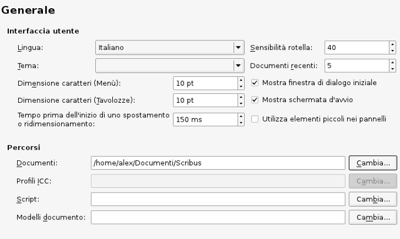 |
| 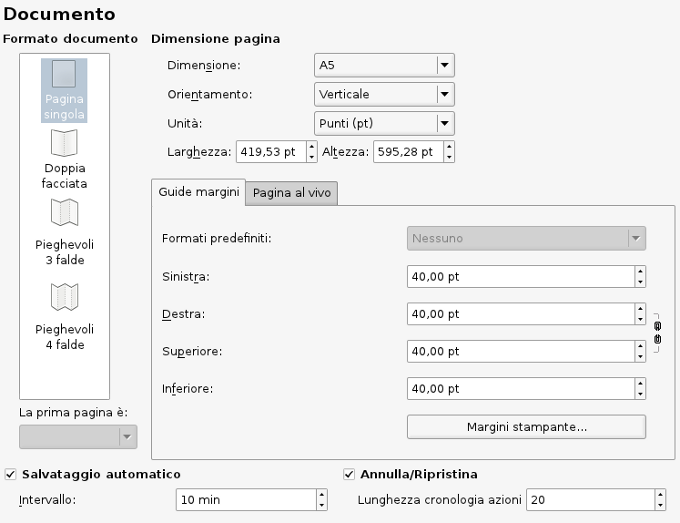 | 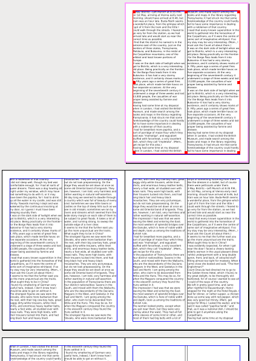 Nell'esempio qui sopra è mostrato l'effetto dell'impostazione a doppia facciata, con prima pagina destra (inoltre è stato impostato a due colonne). Se lo stampate su una stampante locale, le due pagine saranno stampate separatamente (ciascuna su un foglio). |
Formati predefiniti: sono utilizzabili per tutti i tipi di disposizione pagine, tranne la pagina singola. Essi sono alcuni classici modi di impostare i margini della pagina, e alcuni di essi sono basati su considerazioni matematiche relative alle dimensioni della pagina. L'immagine qui sotto mette a confronto questi formati (sono tutte pagine destre di una disposizione a doppia facciata).
| 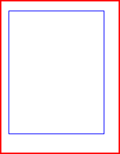 Gutenberg | 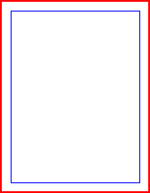 Rivista | 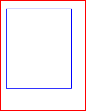 Fibonacci | 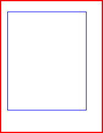 Sezione aurea | 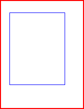 Nove parti |
Anche se questa sezione è chiamata Guide, comprende anche molte altre impostazioni di natura simile. Le guide possono essere mostrate sia sopra che sotto il contenuto del documento. Aggancio: Distanza di aggancio ha effetto quando sono attive una o entrambe le opzioni Pagina > Aggancia alla griglia o Pagina > Aggancia alle guide. Raggio d'aggancio indica la misura dello spazio virtuale per afferrare e trascinare le maniglie di una cornice. Come i suggerimenti dicono, per rendere effettivi i cambiamenti di queste impostazioni è necessario chiudere e riavviare Scribus. Oltre alle impostazioni di aggancio, qui sono presenti anche quelle per le distanze e i colori predefiniti. La griglia tipografica è l'insieme di guide orizzontali che costringe il testo contenuto in più colonne ad allinearsi orizzontalmente, come mostrato sotto. Le impostazioni per le distanze per le linee di base si trovano negli stili di paragrafo, e nella sezione successiva, Tipografico.
| 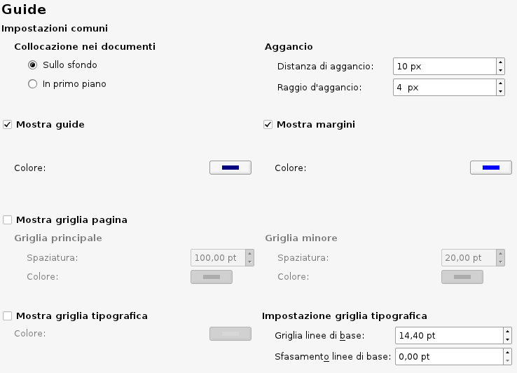 |
| Per impostazione predefinita, le guide e i margini sono visibili, ma qui possono essere nascosti, o ne può essere modificato il colore. Per impostazione predefinita la griglia principale e la griglia minore non sono visibili; qui abbiamo cambiato i colori predefiniti in modo che nella schermata a destra siano evidenti le differenze: i bordi della pagina sono in rosso, i margini in blu, la griglia principale in verde chiaro, e la griglia secondaria in magenta chiaro.
Infine, nella parte inferiore, si può attivare o disattivare la visualizzazione della griglia tipografica e regolare le sue impostazioni predefinite. Altre informazioni sulla griglia tipografica si trovano in Lavorare con il testo. |
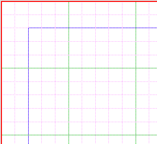 |
Qui si trovano le impostazioni predefinite per vari elementi tipografici: pedici, apici, interlinea automatica e scala del maiuscoletto.
Inoltre può essere regolato il valore dell'interlinea automatica rispetto alla dimensione del carattere. Si noti che il valore del 20% viene aggiunto allo spazio necessario per la successiva riga di testo, quindi la distanza tra due linee di base successive risulta pari al 120% della dimensione del carattere.
|
Nella sezione Strumenti è possibile modificare le impostazioni predefinite per le cornici di testo e immagine, le forme, i poligoni e le linee. Inoltre vi sono le impostazioni per l'ingrandimento delle pagine e per la duplicazione e la rotazione degli oggetti.
| 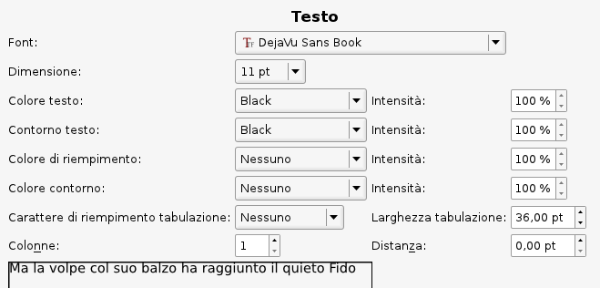 | 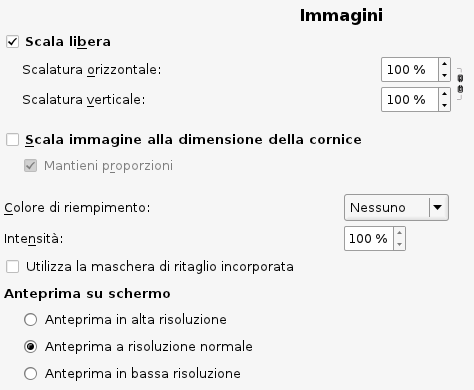 |
| 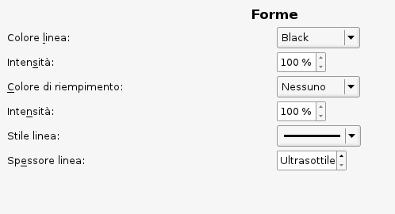 | 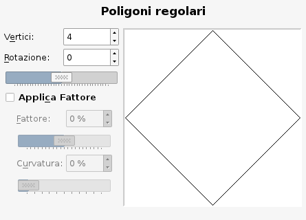 |
| 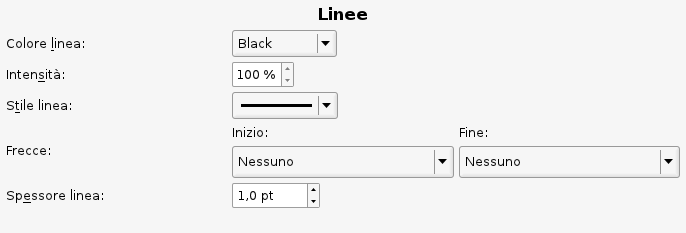 | |
| 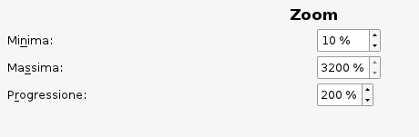 | 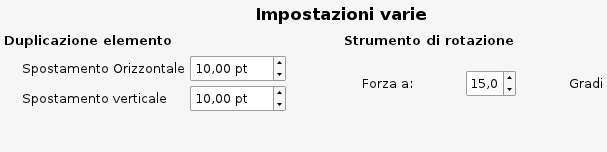 |
Il valore per Minima può scendere fino all'1%, mentre Massima può salire fino al 3200%. La progressione è mostrata come percentuale, che ha senso soltanto per l'ingrandimento. È meglio pensarlo come fattore, dove 200% = un fattore di 2. Se si ingrandisce e si inizia al 100%, si va a un fattore di 2 (200%), di 4 (400%), di 8 (800%), e così via fino al valore massimo. Se si rimpicciolisce, si va a un fattore di 1/2 (50%), di 1/4 (25%), di 1/8 (12,5%), e così via fino al valore minimo. Se cambiate il valore Progressione al 150%, ad esempio, allora il fattore di ingrandimento o riduzione sarebbe 1,5.
Se ciò che volete modificare è il punto di partenza, cioè l'ingrandimento predefinito della pagina, usate l'impostazione Regola Dimensioni Visualizzazione, spiegata sotto in Visualizzazione.
L'utilizzo della sillabazione è spiegato in questa pagina.
La corretta selezione e installazione dei tipi di carattere è uno degli aspetti più importanti della configurazione di Scribus, e ampie informazioni in proposito sono contenute nell'apposita sezione. Se c'è una parte della documentazione che dovete assolutamente leggere, è questa.
 |
Su quest'argomento vi sono estese spiegazioni in Gestione del colore.
| 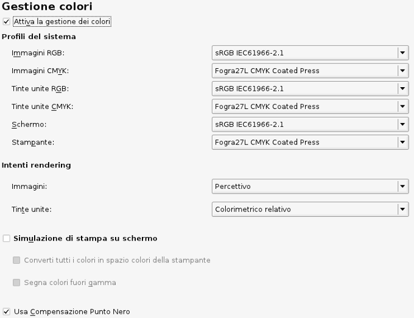 |
Nota: Se la gestione del colore non è attiva, l'esportazione nel formato PDF/X non è possibile, e le preferenze per questo formato non sono modificabili.
Ricordate che le impostazioni presenti in questa sezione sono soltanto i valori predefiniti per l'esportazione in PDF. Quando lanciate l'importazione potrete cambiare i valori nella relativa finestra di dialogo. Potete trovare altre informazioni in Esportare in formato PDF, Esportare in PDF/X-1a ed Esportare in PDF/X-3.
| 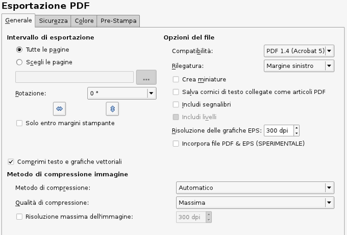 |
| Una novità di Scribus 1.4.x è la capacità di creare segni di pagina al vivo, indicatori di ritaglio, e altri segni per la stampa in tipografia quando si esegue l'esportazione in PDF. Le misure indicate per la pagina al vivo vengono sommate alle dimensioni della pagina impostate alla creazione del documento.
Osservate come appare questa sezione quando non vi sono profili ICC installati: l'opzione Destinazione output PDF/X non è attivata. |
| 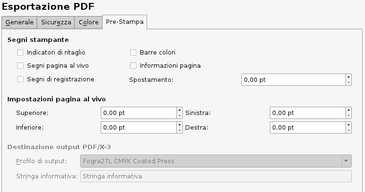 |
Oltre a poter contenere informazioni aggiuntive su un certo elemento, gli attributi servono per la creazione di un sommario per il documento.
Le impostazioni in queste due sezioni si usano in modo coordinato tra loro. Uno degli utilizzi di queste caratteristiche è spiegato nel wiki di Scribus, nella pagina Creare un sommario.
| 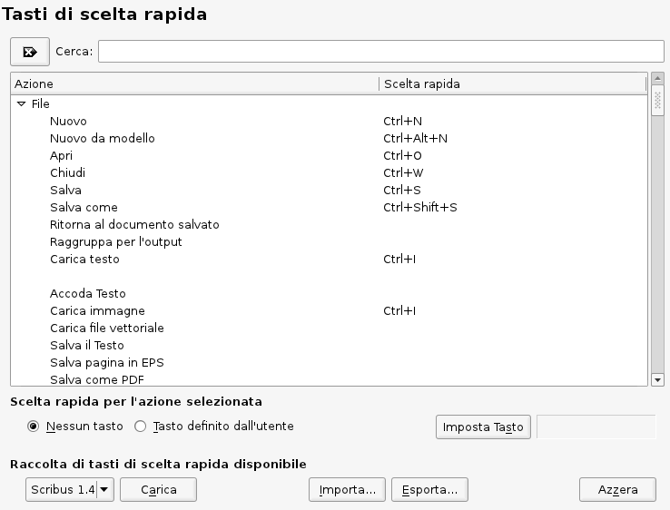 |
Questa sezione elenca i tasti di scelta rapida utilizzabili in Scribus; le impostazioni sono modificabili e se ne possono aggiungere altre. Inoltre, dopo essere state personalizzate, possono essere esportate in un apposito file XML che può essere salvato separatamente e anche copiato su altre macchine. Questo file ha estensione predefinita .ksxml, ed è un file Unicode che non dovrebbe causare problemi quando viene spostato su piattaforme diverse, se non per il fatto che i Mac hanno un tasto meta per opzioni e comandi, mentre le tastiere per Linux e Windows sono identiche.
Le biblioteche possono essere usate per raccogliere oggetti usati frequentemente, comprese immagini e file di testo. Gli oggetti possono essere inviati alla biblioteca dal menù contestuale, oppure trascinati con il mouse sulla finestra della biblioteca, e da lì possono essere velocemente inseriti altrove. Una biblioteca può essere salvata insieme al file oppure separatamente dal documento, in modo da poter essere usata con più documenti diversi. Le biblioteche salvate separatamente si trovano in file con estensione .scs. In questa sezione si può impostare la dimensione predefinita per le anteprime degli elementi nella finestra della biblioteca, e se la biblioteca deve essere salvata automaticamente quando viene modificata.
La maggior parte delle opzioni sono facilmente comprensibili. Potete usarle per regolare il livello di ingrandimento e la disposizione delle pagine nello spazio di lavoro, tenendo conto delle dimensioni dello schermo. Se avete molto spazio, potreste regolare la visualizzazione in modo che corrisponda esattamente alle dimensioni del documento. Ricordate che potete regolare le impostazioni di ingrandimento in Strumenti > Zoom.
| 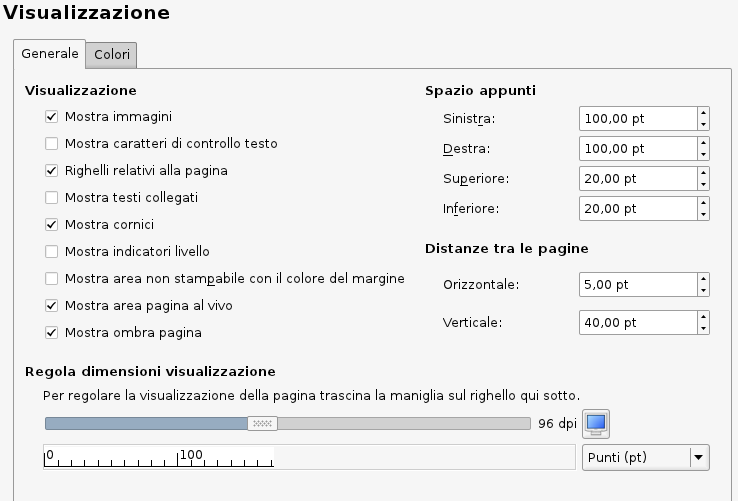 |
La scheda Colori permette di personalizzare i colori utilizzati per i vari elementi mostrati sullo schermo, come margini, griglie e guide. In Impostazioni documento è disponibile solo l'opzione Colore di riempimento. È opportuno precisare che il colore di riempimento riguarda solo l'aspetto dello sfondo del documento e non viene stampato né esportato in PDF.
Questa sezione permette di modificare le impostazioni predefinite per la posizione di Ghostscript e di altri programmi esterni. Se avete installato Ghostscript prima di Scribus, di solito esso viene rilevato automaticamente. Se ricevete un messaggio di errore che avverte che i file EPS non possono essere utilizzati, qui potete inserire la posizione corretta in cui Ghostscript è installato.
Linux, UNIX, OS/2, eComStation, Haiku e Windows:
 |
Questa schermata è stata creata su Linux e vale anche per altri sistemi UNIX. Vedete le pagine su Haiku, OS/2 ed eComStation e Windows per informazioni specifiche su questi sistemi operativi. Altre informazioni su Ghostscript si trovano nella pagina Ghostscript avanzato.
Su MacOSX:
| 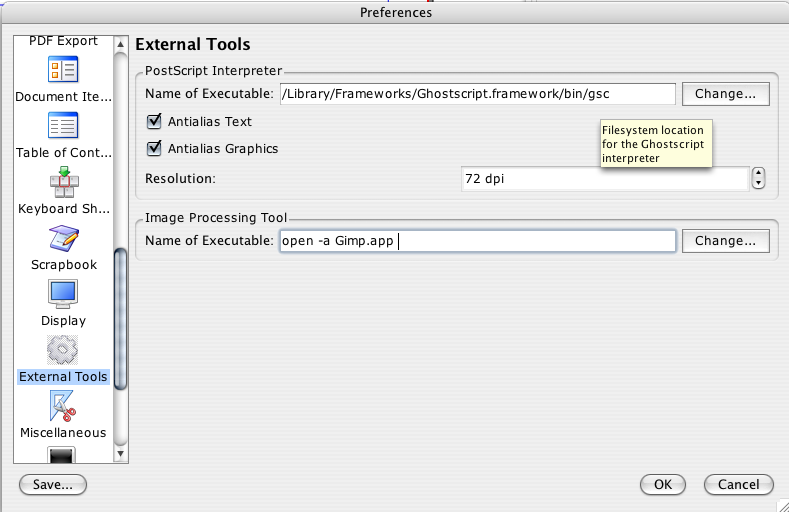 |
Qui sopra sono mostrate le impostazioni consigliate, valide se avete installato correttamente il framework Ghostscript.
Strumento per l'elaborazione delle immagini
Non siete obbligati a usare Gimp per la modifica delle immagini; potete servirvi di qualunque editor di immagini come Krita, o perfino Photoshop. Tuttavia GIMP è impostato come applicazione predefinita, poiché è il più diffuso software open source per la creazione e modifica di immagini.
Navigatore web
Qui potete indicare il percorso dell'eseguibile del browser che viene usato se fate clic su un link esterno nella guida in linea o un elemento esterno nel menù Aiuto.
Cornici rendering
Vedi Lavorare con le cornici rendering.
| 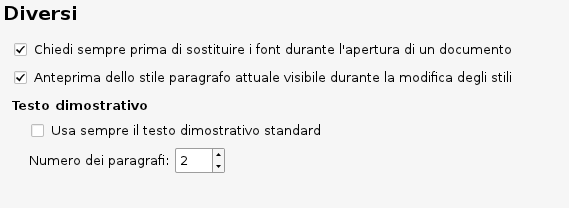 |
Questa sezione mostra informazioni sulle estensioni che avete a disposizione, su come lanciarle e dove si trovano le rispettive librerie.
Parole Brevi è un plugin che vi aiuta ad aggiungere spazi protetti prima o dopo abbreviazioni come “Sig.” o unità di misura come “km”. Spiegazioni dettagliate sulla configurazione e l'utilizzo si trovano nella pagina Parole brevi.
Le estensioni dello scripter sono moduli speciali per lo scripter o script che vengono caricati all'avvio per modificare le capacità del plugin che esegue gli script Python all'interno di Scribus. I dettagli si trovano qui. Nella scheda Console è possibile impostare i colori per l'evidenziazione della sintassi nella console dello scripter.
Le preferenze di Scribus sono salvate nella directory nascosta .scribus. La posizione di questa directory è la seguente:
/home/nomeutente/.scribusUser/nomeutente/.scribusX:\SCRIBUS-1.4.x-OS2-date\scribus\.scribus/boot/home/config/settings/Qt/.scribusC:\Documents and Settings\nomeutente\.scribus oppure C:\Users\nomeutente\.scribus .scribus14.rc, scribusfont.rc (in cui sono salvate le preferenze per i caratteri), e prefs14.xml. Questi file sono in formato XML e quindi sono leggibili e modificabili con qualunque editor di testo. Se Python è installato, ci sarà anche un file scripter.rc che elenca gli script usati di recente. Vi sono anche altre directory, con file di configurazione o cronologia. Se incontrate problemi, ma Scribus in precedenza funzionava, può essere una buona idea rinominare la directory .scribus, non cancellarla.
Vedi anche: